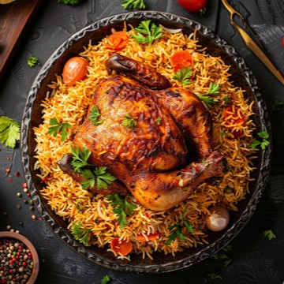
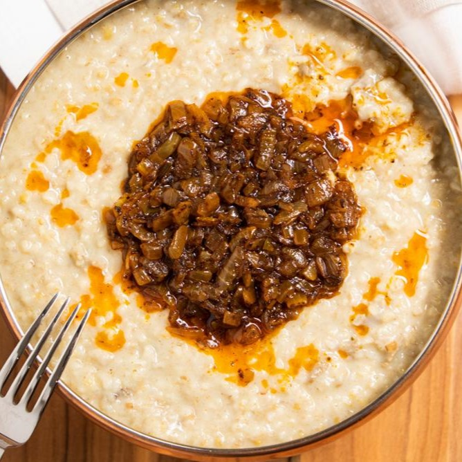
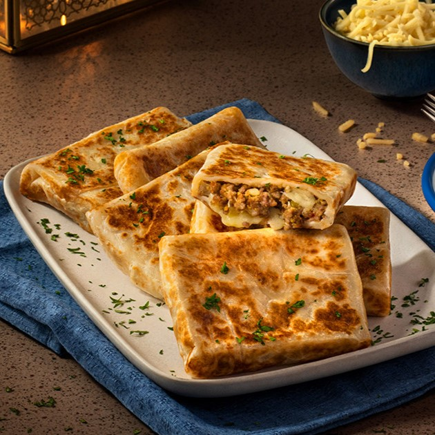
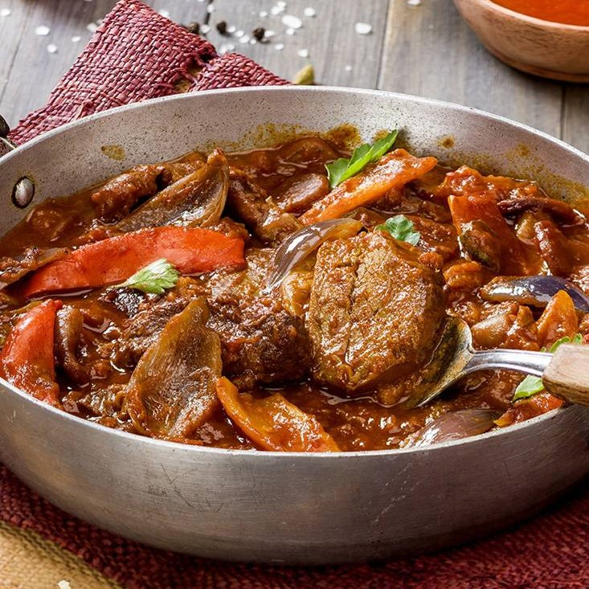
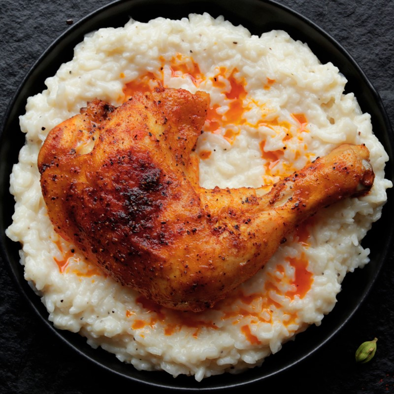

1. Kabsa
Kabsa
A traditional Saudi Arabian dish made with rice, meat, and aromatic spices.

2. Mandi
Mandi
A flavorful rice and meat dish, popular in Arabian cuisine.

3. Jareesh
Jareesh
Cracked wheat cooked with meat or chicken, a comforting dish.

4. Mutabbaq
Mutabbaq
A stuffed pancake filled with savory ingredients like meat and vegetables.

5. Thareed
Thareed
Slow-cooked meat served with bread soaked in broth.

6. Saleeg
Saleeg
A creamy rice dish cooked with milk and served with chicken.